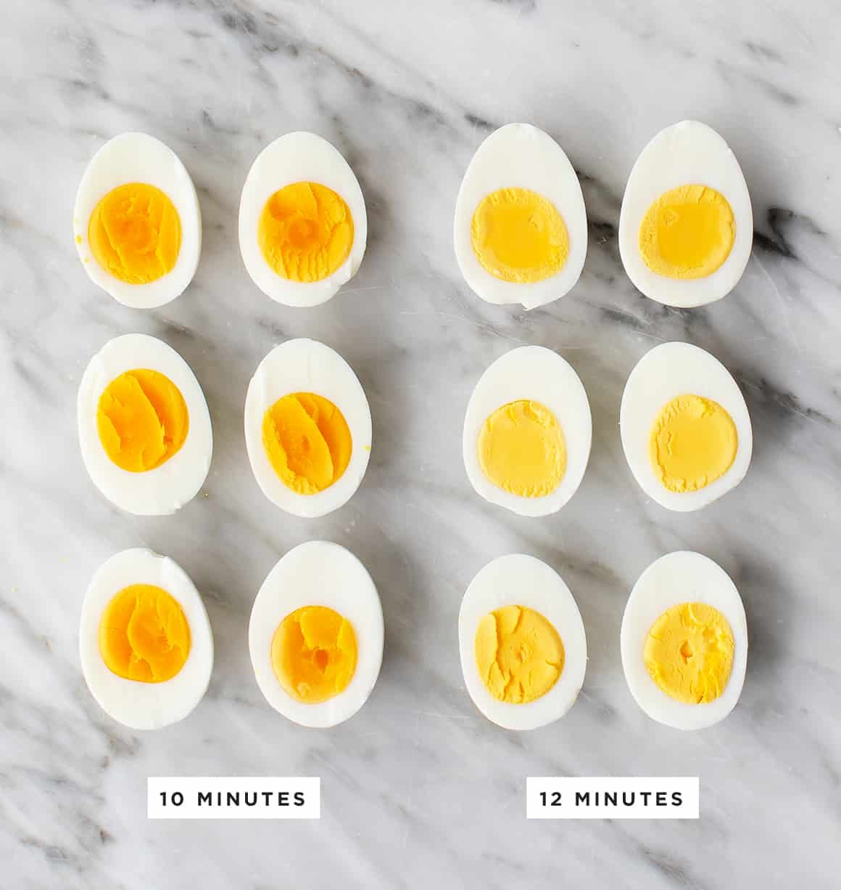

Boiled Eggs

Description
Boiled eggs are eggs, typically from a chicken, cooked with their shells
unbroken, usually by immersion in boiling water. Hard-boiled eggs are
cooked so that the egg white and egg yolk both solidify, while soft-boiled
eggs may leave the yolk, and sometimes the white, at least partially
liquid and raw.
Ingredients:
- As many eggs as you wish
- A pan
- Water (tap, bottled, you name it)
Instructions:
-
Place eggs in the bottom of a saucepan. Be sure not to crowd the eggs in
the pan. They should fit comfortably.
- Fill the pan with cold water, 1 inch above the eggs.
- Bring the water to a rapid boil on the stovetop over high heat.
-
Once the water comes to a boil, cover the pan with a lid and remove the
pan from the heat. Do not lift the lid. Set a timer for the type of
boiled egg you want, from 4 minutes to 12 minutes.
- Fill a large bowl with ice and water.
-
When the eggs reach the desired cooking time, use tongs to remove the
eggs from the hot water and immerse gently into the prepared ice water
to cool, about 10 minutes.
-
Gently tap the eggs against a hard surface and peel away the shell.
Rinse the egg under cold water to remove any bits of shell and pat dry.
Back to Top
Back to Home